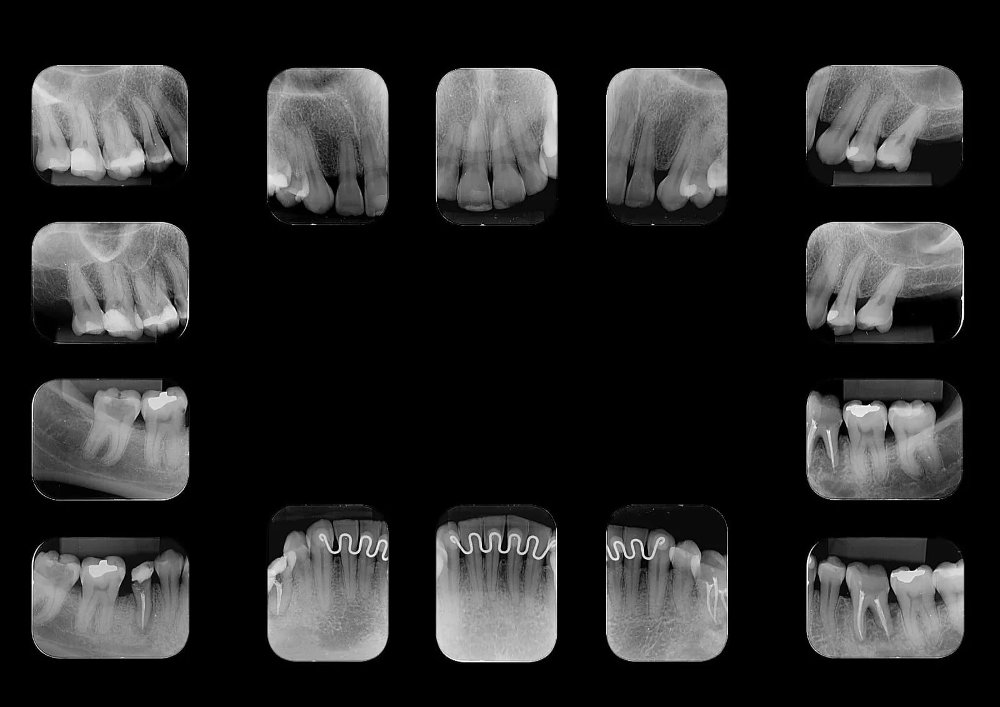

O que é a radiografia periapical boca toda?
Também conhecida como levantamento periapical completo ou status periapical, é um conjunto de radiografias intraorais que permite a avaliação detalhada de todos os dentes e de suas estruturas de suporte. Diferente da radiografia panorâmica, que oferece uma visão geral, as imagens periapicais proporcionam um nível de detalhamento muito maior, mostrando com precisão a coroa, a raiz e o osso alveolar ao redor de cada dente.
Por apresentar imagens individuais e altamente nítidas, o levantamento periapical é fundamental para o diagnóstico preciso de alterações que podem passar despercebidas em outros tipos de exames, sendo indicado em praticamente todas as especialidades odontológicas.
Quantas radiografias compõem o exame?
O levantamento periapical completo para pacientes adultos é composto por 14 radiografias periapicais, distribuídas da seguinte forma:
- 7 radiografias da arcada superior (maxila) — cobrindo incisivos, caninos, pré-molares e molares
- 7 radiografias da arcada inferior (mandíbula) — seguindo a mesma distribuição
Para pacientes com dentição decídua (crianças com dentes de leite), o exame é realizado com 10 radiografias periapicais — 5 superiores e 5 inferiores — respeitando a anatomia e o número de dentes da criança.
Como é feito o exame periapical?
As imagens são obtidas por meio de pequenos sensores digitais posicionados no interior da cavidade bucal, próximos aos dentes que serão avaliados. Esses sensores captam a imagem imediatamente e a transmitem ao computador, proporcionando alta definição e riqueza de detalhes das estruturas dentárias e do tecido ósseo adjacente.
O procedimento completo segue estas etapas:
- O paciente é acomodado confortavelmente na cadeira
- Um protetor de chumbo é colocado sobre o tórax como medida de segurança
- O sensor digital é posicionado no interior da boca, junto ao dente a ser radiografado
- O aparelho de raio X é direcionado ao sensor e dispara uma exposição rápida
- O processo é repetido 14 vezes (ou 10, no caso de crianças), cobrindo todos os dentes
- As imagens são visualizadas e entregues em formato digital
Principais indicações do levantamento periapical
O exame é solicitado em diversas situações clínicas, sendo considerado um dos mais completos da radiologia odontológica intraoral:
- Lesões cariosas, especialmente as interproximais (entre os dentes), que muitas vezes não são visíveis no exame clínico
- Reabsorções ósseas interdentais associadas à doença periodontal
- Alterações periapicais como granulomas, cistos e abscessos localizados nas raízes
- Avaliação do periodonto e das estruturas de suporte dos dentes
- Diagnóstico endodôntico — fundamental para o planejamento de tratamentos de canal radicular
- Acompanhamento de tratamentos concluídos ou em andamento
- Avaliação de implantes dentários, próteses e restaurações
- Diagnóstico de fraturas radiculares e traumas dentários
Vantagens da versão digital
Na Radix Radiologia, todas as radiografias periapicais são realizadas com sensores digitais de alta resolução, o que traz uma série de benefícios em relação ao método convencional com filmes:
- Menor dose de radiação ao paciente em cada exposição
- Imagem instantânea, sem necessidade de revelação química
- Alta definição permite identificar detalhes que escapariam ao método analógico
- Possibilidade de manipulação da imagem (zoom, ajuste de brilho e contraste) pelo cirurgião-dentista
- Entrega digital por WhatsApp, e-mail ou pen drive
- Exame sustentável, sem uso de filmes ou soluções químicas poluentes
O exame é confortável?
O levantamento periapical é um exame indolor e seguro. O sensor digital tem dimensões reduzidas e é posicionado com cuidado para não causar desconforto. A equipe técnica da Radix é treinada para conduzir o exame com agilidade e atenção, tornando a experiência tranquila tanto para adultos quanto para crianças. A dose de radiação de cada radiografia é baixíssima, estando dentro dos mais rígidos padrões de segurança.
Onde fazer radiografia periapical em Taquaritinga?
A Radix Radiologia Odontológica é referência em radiografias intraorais digitais em Taquaritinga e região. Localizada na Praça Dr. José Furiatti, 184, Centro, a clínica conta com equipamentos modernos e profissionais especializados, garantindo imagens de máxima qualidade para um diagnóstico preciso. Atendemos pacientes de Taquaritinga e cidades da região, mediante solicitação do cirurgião-dentista.